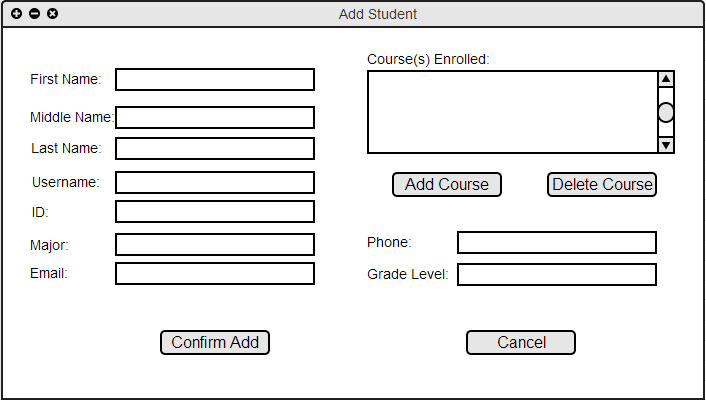
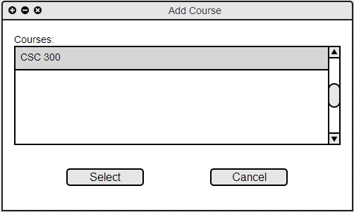
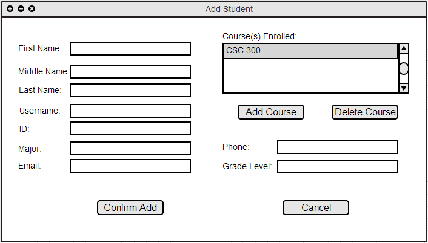
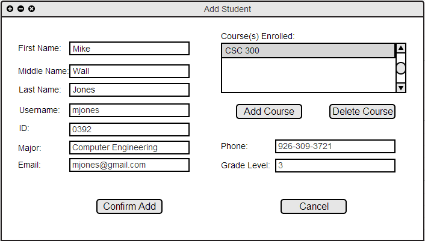
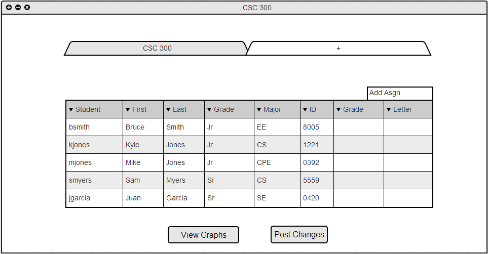

When the user selects the "New +" button in the Student column of the front page or when the user navigates the toolbar "Student->Add Student" the system responds with the dialog shown in Figure 2.3.A.

Figure 2.3.A: Add Student dialog.
After the user selects the "Add Course" button from the Add Student screen the system responds with a pop of of the window shown in Figure 2.3.B

Figure 2.3.B: Add Course dialog
The text inside the scroll box consists of all courses taught by the current user. The field populates proceeding a synchronization of the school's roster database with the user's local program, please see section 2.2.1 Download Roster + Authentication for assistance with synchronizing the roster. The user selects a course to add by clicking on the course's text. Following the click from the user, the text highlights the user's selection. The user may confirm to add the highlighted course by selecting the Select button. The Cancel button simply closes out this dialog.
Once the user selects a course to add and clicks on the Select button,the Add Student dialog populates as shown below in Figure 2.3.C

Figure 2.3.C: Add Course dialog
Figure 2.3.D below shows the Add Student dialog filled completely, meeting all input requirements.

Figure 2.3.D: Add Student Filled dialog
After the user selects the Confirm Add button on the Add Student dialog screen, the student is added to the rosters in which they are enrolled. Figure 2.2.2.D Resulting spreadsheet view shows the roster before the Add Student operation is completed, while Figure 2.3.E below shows the updated roster after adding the new student.

Figure 2.3.E: Roster Post Add Student
The student just added is automatically placed into the roster based on the current filtering and sorting methods. Student mjones is added to the roster below kjones and above smyers based on current Grade sorting for this specific roster. For more information regarding sorting functionality, please see Section 2.5.2 Sort